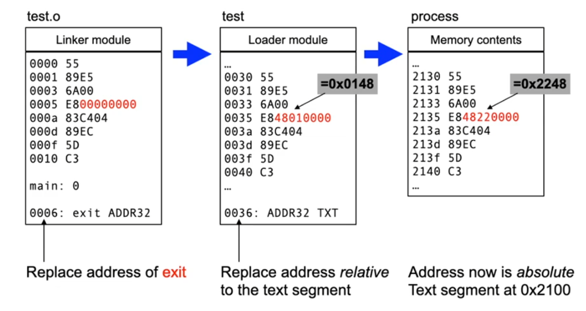
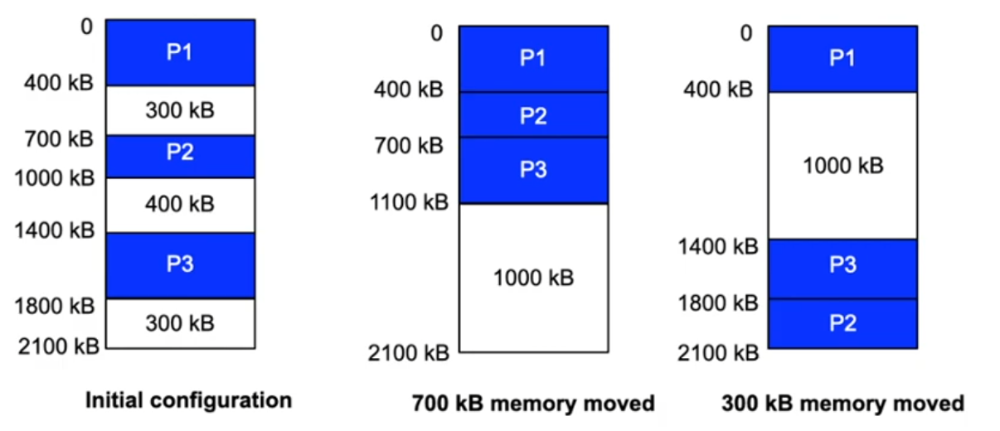
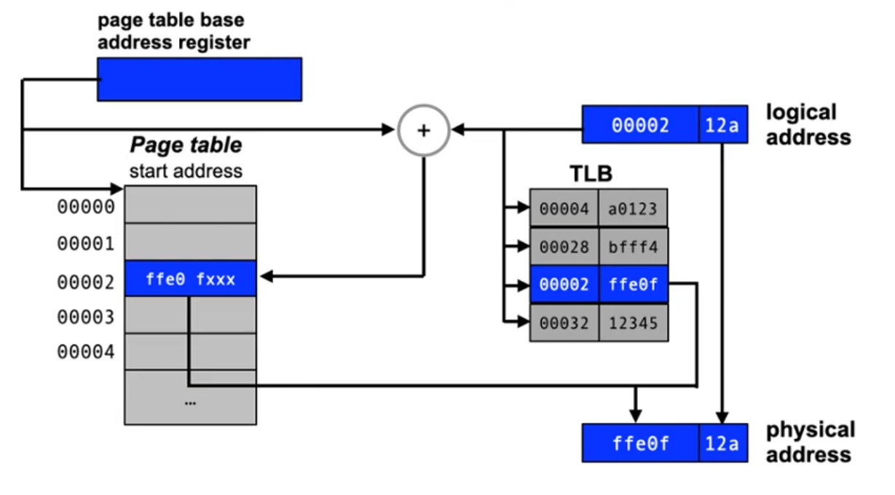

Lecture 9, part 1: Memory management
Exam
Main memory as a resource and its management
Important questions:
- Requirements for memory management for multiprogramming systems?
- Which policies and strategies are relevant for memory management?
- Can you describe the basic problem of memory allocation?
- How does dynamic memory allocation work?
- Can you describe different approaches, describe pros/cons?
- Can you name and describe different placement strategies?
- What is memory fragmentation?
- Which kinds of fragmentation exist, what are their properties?
- Where are different allocation methods typically used?
- Can you describe differences between swapping, segmentation, paging?
- How does paging as an OS concept interact with the MMU?
- How can paging be optimized using hardware or software approaches?
Resources (again)
- Tasks of an operating system:
- Administering the resources of a computer ^6134fb
- Creating abstractions that allow applications to easily and efficiently use these resources
- So far: processes
- Concept to abstract from a real CPU
- Now: memory
- Administration of main and background memory (RAM and secondary storage)
Multiprogramming (again)
- CPU load under the assumption of a given probability to wait for I/O
- Multiprogramming is essential to guarantee a high CPU utilization
- When processes are started and terminated, memory has to be allocated and released dynamically!
Memory management requirements
- Multiple processes need main memory
- Processes are located in different positions in main memory
- Protection requirements:
- Protect the OS from processes
- Protect processes against accesses from other processes
- Size of main memory may not suffice for all processes together
- OS has to know about free memory areas, administer and allocate them
- Swapping of processes
- Relocation of instructions in programs
- Use hardware support
Basic policies and strategies
- Placement policy
- Which area of memory should be allocated?
- The one with the largest/smallest fragmentation?
- Not that relevant, since fragmentation is secondary.
- Which area of memory should be allocated?
- Fetch policy
- When should we swap in memory contents?
- On demand or predictive
- When should we swap in memory contents?
- Replacement policy
- Which memory contents should be swapped out if the system is running out of free memory?
- The oldest, least used one
- The one that is used for the longest amound of time
- Which memory contents should be swapped out if the system is running out of free memory?
Memory allocation: problem
The available memory is used by
- User processes
- Program code (text)
- Program data (data)
- Dynamic memory allocations (stack, heap)
- Operating system
- Operating system code and data
- Process control blocks
- Data buffers for I/O
- ...
- Memory allocation is necessary!
Static memory allocation
- Idea: use fixed memory areas for the OS and for user processes
- Problems:
- Limited degree of multiprogramming
- Limitation of other resources e.g. I/O bandwidth due to buffers that are too small
- Unused OS memory cannot be used by application processes (and vice versa)
- Solution: use dynamic memory allocation
Dynamic memory allocation
- Segments
- contiguous area of memory
- Allocation and release of segments
- All the segments that hre part of a program we have seen already:
- text segment(s)
- data segment(s)
- stack segment(s) (local variables, parameters, return addresses, ...)
- Search for suitable memory areas for allocation
- especially when a program is started
- Placement policies required
- especially important: management of free memory
Memory allocation: bit lists
- Free (sometimes also allocated) segments of main memory have to be represented
- Simple approach: bit lists
- Problems:
- Bit lists can require lots of memory
- When releasing memory, the size of the memory block to be released has to be known or provided
- Linear search is slow
- Problems:
Memory allocation: linked list
- Representation of used and free segments
- Problem:
- Memory required for the list has to be allocated (dynamically)
Linked list in free memory
- A minimum gap size has to be guaranteed to store the length of and the pointer to the next free gap!
- Problem:
- To increase efficieny, backwards links might be required in addition
- This representation is dependent on the allocation strategy
Placement strategies
...based on different sorting policies for the list of gaps:
- First fit (sorted after memory address)
- use the first fitting gap
- Rotating First Fit / Next Fit
- Like first fit, but start with the most recently allocated gap
- avoids the generation of a large number of small gaps at the beginning of the list
- Best Fit (sorted after gap size - smallest first)
- find the smallest fitting gap
- Worst Fit (sorted after gap size - largest first)
- find the largest fitting gap
- Problems:
- gaps that are too small, fragmentation
Placement strategies (2)
- Buddy method: split memory dynamically into areas of a size 2^n^

Discussion: fragmentation
- External fragmentation
- Allocations creates memory fragments outside of the allocated memory areas which cannot be used
- Problems with all list based strategies, e.g. first fit, best fit ...
- Internal fragmentation
- Unused memory inside of allocated memory areas
- Problem e.g. with the buddy allocator
- since request sizes are rounded up to the next power of two
Use of the different methods
- In the operating system (kernel) itself
- Management of system memory
- Allocation of memory to processes and the operating system itself
- e.g. Buddy allocator in Linux
- Inside of processes
- Management of heap memory
- Enables dynamic allocation of memory areas by the process (using the malloc und free libc functions)
- Typically using linked lists
- Areas of secondary storage
- Management of certain sections of secondary memory
- e.g. the area used for process swapping (swap space)
- Often using bitmaps
- Management of certain sections of secondary memory
Lecture 9, part 2: Memory management and MMU hardware support
Multiprogramming: swapping
- Segments of a process are swapped out to background memory and released in main memory
- e.g. if I/O waiting times hinder a process from running
- Segments are swapped in back into main memory when the waiting time ends
- Large amount of time required for swapping in and out
- Latency of the disk (e.g. positioning og a read/write head of a hard disk, not a big problem with SSDs)
- Transfer time
Swapping (2)
- Addresses in processes are usually linked statically
- Can only be swapped into the same location in main memory
- Collisions with new segments allocated in memory after the process was swapped out
- Possible solution: partitioning of main memory
- Only one process per partition
- Swapping in into the same partition as before
- Memory cannot be used optimally
- Better approach: dynamic allocation and program relocation
Address linking and relocation
- Problem: Machine instructions use addresses
- e.g. a jump instruction that changes control flow into a function
- or a load instruction to read a variable value from the data segment
- Different approaches to link the adrress used as the operand of an instuction:
- Absolute linking (at compile/link time)
- Addresses are fixed
- The program can only execute correctly at a certain location in memory
- Static linking (at load time)
- Absolute addresses are adapted (relocated) when a program is loaded (started)
- Relocation information has to be provided by the compiler/assembler
- Dynamic linking (at execution time)
- Code accesses operands only indirectly
- The program can be relocated in memory at any time
- Resulting programs are slightly larger and slower
- Absolute linking (at compile/link time)
Address linking and relocation (2)
- Translation process (creation of relocation information)

Address linking and relocation (3)

Address linking and relocation (4)
- Relocation information in the linker module (object file)
- allows the linking of modules into arbitrary programs
- Relocation information in the loader module
- allows loading of the program at arbitrary locations in memory
- absolute addresses are generated only at load time
- Dynamic linking with compiler support
- Program does not use absolute addresses and can thus always be loaded to arbitrary memory locations
- position independent code (PIC)
- Program does not use absolute addresses and can thus always be loaded to arbitrary memory locations
- Dynamic linking with MMU support
- What modern computers usually do
- Mapping from "logical" to "physical" addresses
- Relocation at link time is sufficient (except for shared libraries)
Segmentation
- Hardware support: map logical to physical addresses
- The segment in the logical address space can be located at an arbitrary position in the physical space
- The OS controls where a segment is located in physical memory
Segmentation (2)
- Using a translation table (per process)
Segmentation (3)
- Hardware component translating addresse: MMU (Memory Management Unit)
- Protects against overstepping the segment limits
- MMU checks read/write/execute permissions
- Trap indicates a violation (a process attempts to access non permitted memory location)
- Programs and operating system are protected against each other
- Process switching by exchanging the segment base
- each process has its own translation table
- Easier swapping
- after swapping a process into an arbitrary memory location, only the translation table has to be modified
- Shared segments are possible
- Instruction (text) segments
- Data segments (shared memory)
Segmentation (4)
Problems...
- Fragmentation of main memory due to frequent swapping or starting/termination of processes
- This results in small unusable gaps: external fragmentation
- Compacting helps
- Segments are moved to close gaps
- Segment table is modified accordingly
- Time consuming..
- Long running I/O operations required for swapping
- Not all parts of a segment are used with the same frequency
Compaction
- Moving of segments
- Creates fewer but larger gaps
- Reduced fragmentation
- Operation with large overhead
- Specific overhead depends on the size of the segments that are moved

Paging
- Logical address space is split into pages of identical size
- Pages can be located at arbitrary positions in the physical memory address space
- Solves the fragmentation problem
- No compaction necessary
- Simplified memory allocation and swapping
MMU with page table
- A table is used to translate page addresses into page frame addresses

MMU with page table (2)
- Page-based addressing creates internal fragmentation
- The last page is often not used completely
- Page size
- small pages reduce internal fragmentation, but increase the size of the page table (and vice versa)
- common page size: 512 bytes - 8192 bytes
- Page tables are large and have to be kept in main memory
- Large number of implicit page accesses required to map an address
- Only one "segment" per context
- Makes the "appropriate" use of memory difficult to control
- e.g. ensuring push/pop only on "stack", execution only of "text"
- Makes the "appropriate" use of memory difficult to control
-> Combine paging with segmentation
Segmentation and page addressing
Segmentation and page addressing (2)
- This requires even more implicit memory accesses
- Large tables in main memory
- Mixup of the different concepts
- Still swapping of complete segments
-> Multi-level page addressing with paging
Paging
- Swapping complete segments is not necessary
- Single pages can now be swapped (paged)
- Hardware support
- If the presence bit is set, nothing changes
- If the presence bit is cleared, a trap is invoked (page fault)
- The trap handler (part of the OS) can now initiate the loading of the page from background storage (this requires hardware support in the CPU)
Multi-level page addressing
- Example: two-level page addressing
- Presence bit also for all entries in higher levels
- This enable the swapping of page tables
- Tables can be created at access time (on demand) - saves memory!
- However: even more implicit memory addresses required
Translation lookaside buffer (TLB)
- Fast cache which is consulted before a (possible) lookup in the page table

Translation lookaside buffer (2)
- Fast access to page address mapping, if the information is contained in the (fully associative) TLB memory
- No implicit page accesses required
- TLB has to be flushed when the OS switches context
- If a page not contained in the TLB is accessed, the related access information is entered into the TLB
- An old TLB entry has to be selected to be replaced by the new one
- TLB sizes:
- Intel Core i7: 512 entries, page size 4 kB
- UltraSPARC T2: data TLB = 128, Code TLB = 64, page size 8 kB
- Larger TLBs are currently not implemented due to timing and cost considerations
Inverted page tables
- For large logical address spaces (e.g. 64 bit addresses)
- Classical page tables are very large or
- Large number of address translation levels
- Page tables are often only sparsely populated
-> Inverted Page Tables

Inverted page tables (2)
- Advantages
- Required little memory space to store address mappings
- Table can always be kept in main memory
- Disadvantages
- Sharing of page frames is difficult to implement
- Process-local data structures are used for pages that are swapped out
- Lookups in the page table have large overhead
- Use of associative memories and hash functions
- Despite these disadvantages, many 64 bit processors use this approach to address translation:
- Sun UltraSparc, IBM PowerPC, intel Itanium (IA-64), (DEC Alpha), ...
- But these are not in much use today
Conclusion
- The OS has to work in close cooperation with the hardware to enable efficient memory management
- Segmentation and/or page-based addressing
- The implicit indirection of memory accesses allows to arbitrarily move code and data of running processes under the control of the OS (at page size granularity)
- Additional strategic decisions have to be taken
- Placement strategy (first fit, best fit, buddy, ...)
- These differ with regard to fragmentation and the required overhead from allocation and release
- Selection of an appropriate strategy depends on the expected application profile
- When swapping segments or pages:
- Loading strategy
- Replacement strategy
- Placement strategy (first fit, best fit, buddy, ...)